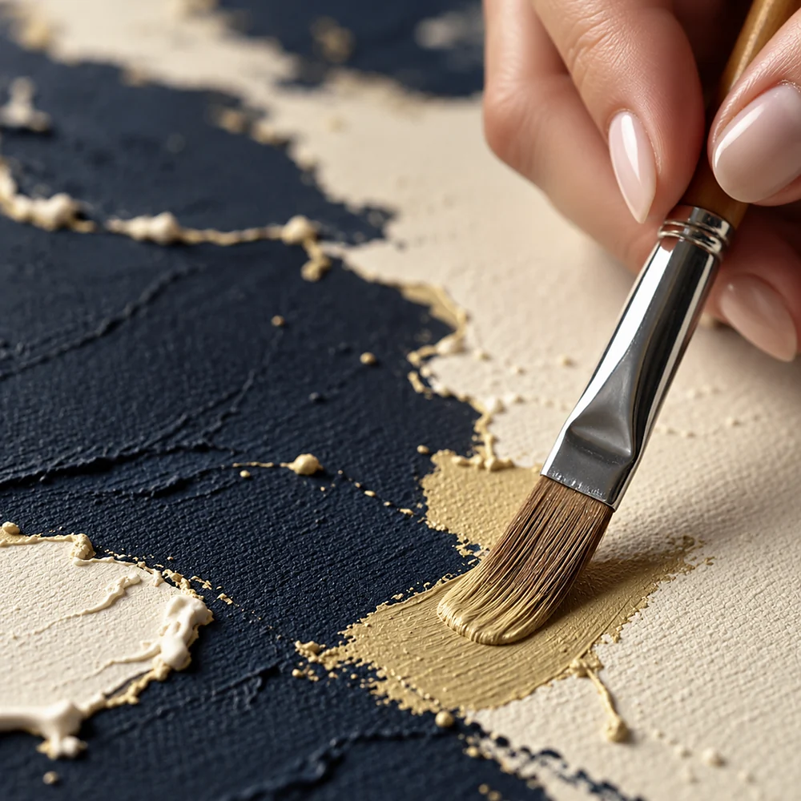

上弦月 · FIRST QUARTER
正念艺术疗愈
一对一探索
带着题目来可以，没有题目也可以。
工作、关系、卡了很久的那个决定，都可以谈。没有题目的话，就是来练习呼吸，重新体验久违的创作乐趣。
不需要会画画，也不必先把感受说清楚。
画得好不好，在这里从来不重要。
一个月探索陪伴 · 三次 · ¥ 1,150
走一段路，不只解一个题。适合正在做某个大决定的人。

从呼吸开始，接着自由创作，最后通过对话，一起回看作品里的发现。
01
呼吸，回到当下
从身体觉察开始，留意此刻的感受。
02
自由创作
让颜色与线条，带出还没说清楚的想法与感受。
03
作品探索
从作品出发，通过提问与对话，留意那些平常没有察觉的感受与需要。